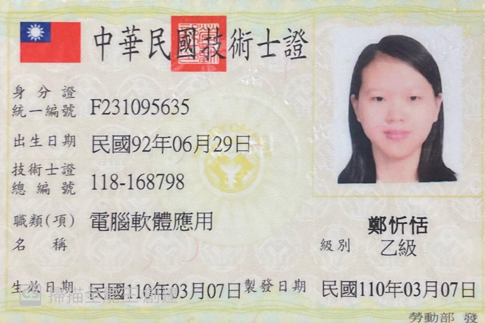

-
技能
電腦應用 語言能力 社群操作 Adobe、Photoshop、PowerPoint、Access、Excel、Word、Python、Visual Basic 中文 聽/精通 說/精通 讀/精通 寫/精通
英文 聽/普通 說/普通 讀/普通 寫/普通Facebook、Instagram、Line -
學歷
三芝國小 三芝國中 淡水商工 亞東科技大學 就讀期間：2009/09~2015/06 就讀期間：2015/09~2018/06 就讀科系：資料處理科
就讀期間：2018/09~2021/06就讀科系：資訊管理系
就讀期間：2021/09~至今 -
興趣
畫畫
吃美食
-
證照
電腦軟體應用丙級技術士 電腦軟體應用乙級技術士 會計事務-
人工記帳丙級技術士 這是我第一張關於電腦的證照，第一次考電腦的證照，不太清楚考試的操作是怎麼樣，還好是在自己的學校考，還有老師會幫忙操作前前製作業，例如下載Office系統。 這張證照我考了三次才過，一次沒過再考，兩次沒過再考，覺得不管怎樣就是要考到過為止，秉持著努力不懈的精神。 考這張證照時，真的很緊張，很怕自己考不好，會計老師很看重我，不想讓他對我感到失望，所以拚盡全力也要考到這張證照，很開心最後也用了蠻高的成績拿到了這張證照。 商業職業教育學會
會計能力測驗第三級商業職業教育學會
英語能力測驗第四級TQC-OA 辦公軟體應用類
Word 2016 進階級

這張證照是我所有證照中第一個拿到的，考這張證照是在考會計丙級檢定之前，就像是模擬考的感覺，先熟悉考試的操作，這樣考會計丙級檢定就不會很慌張，不知道要怎麼操作。 這張證照是我第一張英文證照，考這張證照時，我其實沒有把握自己可以考到這張證照，知道自己英文沒有很好，但是就是想去試試看，多拿一張證照也有好處，結果順利的拿到了這張證照。 Word說難不難，說簡單也不簡單，平常很常用Word，但是有些功能又不常用，考這張證照讓我學到很多Word一些不常用，但又很方便的功能。 TQC-OA 辦公軟體應用類
Excel 2016 進階級TQC-DA 資料庫應用類
Access 2016 進階級TQC-OA 辦公軟體應用類
PowerPoint 2016 進階級剛開始學Excel的時候，覺得真的很難，要背一些函數或公式，很麻煩，但是後來了解那些函數或公式怎麼用後就沒那麼難了，有些公式很長，如果用死背的方式，真的很累人，但是如果理解完為什麼要那樣用後，就比較簡單了。 我覺得Access跟Excel其實差不多一樣，兩個函數跟公式用法差不多相同，但還是有不一樣的地方，像是在Excel是用If，而在Access是Iff，當時Access跟Excel的證照是一起考的，兩個一起考其實蠻容易搞混的，幸好當時沒有搞混，還是有拿到這兩張證照。 PowerPoint是我在Office系統中最熟悉的一個軟體，因為做報告時很常用到，但是在這裡面有很多功能是我不知道的，剛開始覺得這張證照應該是我最有把握的，但是開始學的時候，就遇到一大堆之前根本沒用過的功能，頓時覺得自己還需要再多多學習。 PVQC 專業英文詞彙能力
國際認證－計算機類我最不擅長就是背英文單字了，我通常背完過沒多久就忘了，想說不知道自己能不能考過這張證照，但是不管怎樣都要去試試看，很開心自己很幸運的成功拿到這張證照，這張證照是我最有成就感的一張了，覺得自己完成自己人生的一大成就。
鄭忻恬

學生 • NEW TPE，TW • mindy450010@gmail.com
就讀於亞東科技大學資訊管理系。
「只要堅定目標向前，你可以到達任何的地方」是我的座右銘。
Studied at the Department of Information Management of Asia Eastern University of Science and Technology.
You can get anywhere as long as you keep moving forward.